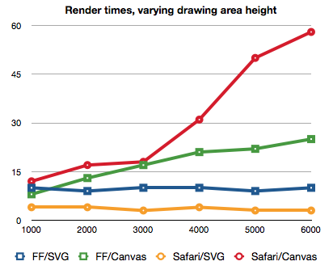

Performance of Canvas versus SVG
At the core of the traditional HTML/CSS developer's toolkit is a set of nested boxes describing offset, margin, border and padding, known as the box model. Variations on the box theme are sufficient to describe most page layouts, but in some complex applications, it's necessary to render something more interesting, like diagonal lines, or polygons. There are currently two relatively well-supported web graphics technologies: SVG and Canvas. There are significant performance differences, however, which I would like to discuss in this article.
Scalable Vector Graphics (SVG) is by far the oldest of the two. It is a declarative, graphical language used to describe geometrical primitives via DOM elements. SVG was drafted in the late 90s, and the latest version of SVG, version 1.1 was finalized in 2003. It took 3 more years for it to be incorporated into shipping versions of Mozilla Firefox and Safari. Unfortunately, the length of the SVG adoption process caused the web development community to seek other options. The HTML5 Canvas element was introduced as a much simpler alternative to graphics on the web. It provides an image-like graphics context which can be accessed via a set of javascript calls, similar to a 2D subset of OpenGL. It was originally introduced by Apple in WebKit builds, but is now supported in Mozilla Firefox as well.
I produced some metrics to compare the two technologies in terms of performance by writing a Javascript program for collecting performance data. This program draws rows of circles onto a fixed-size drawing area in SVG and in Canvas, and then compares how long various operations take. It also records the duration to create the initial drawing context, to render the scene and to clear the scene. A test runner invokes the benchmark with the following variables: number of circles, drawing area dimensions and circle size. Each of these variables are varied independantly and automatically resulting in the following observations:

Here are the results of the first fruitful experiment, which clearly shows that SVG performance degrades quickly (exponentially on Safari?) in the number of objects, but Canvas performance remains at a near-constant low. This makes sense, since Canvas is just a bitmap buffer, while SVG has to maintain additional references to each object that it renders. Also, though not pictured, note that performance in clearing an SVG element also decreases in the number of drawn objects.

When varying the size of the drawing area, canvas performance degrades significantly, while SVG performance is completely unaffected. Canvas rendering performance seems to degrade linearly in the number of pixels in the canvas area. Not pictured on the graph is clear performance for large canvases, which also suffers linearly in pixel count.
I did not include the graph resulting from varying circle size as it had no significant impact on render time. Another interesting observation is that creating the canvas element takes a mysterious 10 ms on Firefox, but not on Safari. This is not significant unless you are dealing with large numbers of canvas elements.
Whether or not you use Canvas or SVG mostly depends on your specific application. A graphics-intensive game, where many objects are redrawn all the time is probably best implemented in Canvas. On the other hand, applications like map viewers may involve large rendering areas and might lend themselves better to SVG.
As always, please comment if something is unclear, inconsistent, boring or omitted. Thanks!